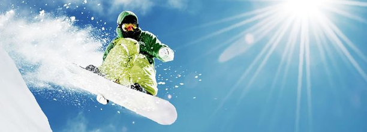

В сноуборда има няколко стила - фрийрайд, фриистайл, бордъркрос и спускания в "алпийски стил" (които стават пред много публика и имат оценяване от жури). Фриистайлът често се практикува от скейтъри, защото много движения в този стил са заети от скейтборда и сърфа.
Стилове